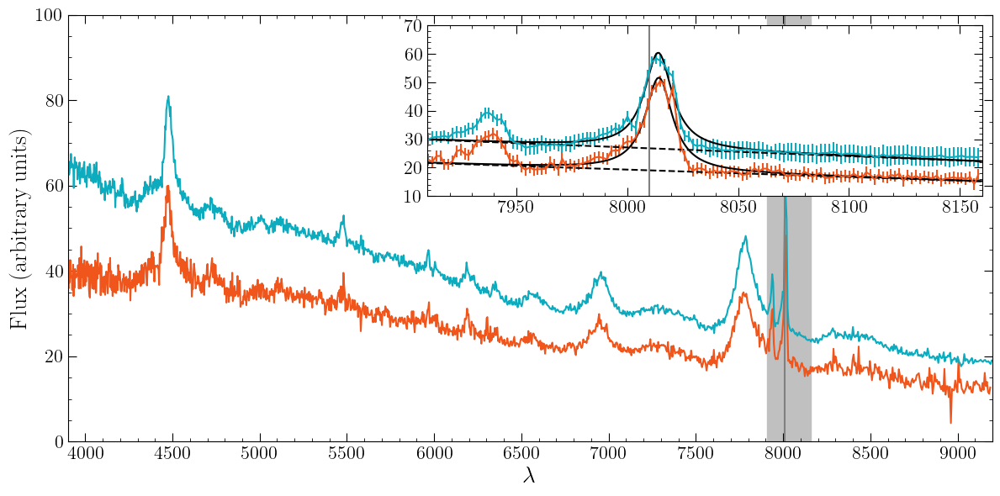
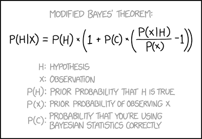

Applied Bayesian Statistics#
The two main applications of Bayesian statistics are parameter estimation and model comparison. The latter is particularly useful and unique to this framework. We focus on model comparison in this notebook, specifically:
Discussing an example of two competing models given the same data
Comparing models based on their quality of fit but also their complexity (Occam’s razor)
Presenting the Bayesian way for model comparison
Discussing the pros and cons of frequentist vs bayesian statistical approaches
Setup#
import numpy as np
import scipy.stats as st
import matplotlib.pyplot as plt
import requests
from scipy.optimize import minimize
from IPython.display import display, HTML
display(HTML("<style>.container { width:100% !important; }</style>"))
url = "https://raw.githubusercontent.com/AstroStat-Academy/assets-public/main/colab/clone_and_cd_colab.py"
colab = requests.get(url).text
exec(colab)
url = "https://raw.githubusercontent.com/AstroStat-Academy/assets-public/main/styles/plot_style.py"
style = requests.get(url).text
exec(style)
Never forget!#
Fitting a line#
A lot of information on the physical properties of astronomical objects is accessed through spectroscopic measurements, i.e. the emission intensity as a function of wavelength/frequency. Interesting spectral features are emission or absorption lines. Naturally, the lines are not… lines, but narrow peaks. Local/extended effects tend to ‘’broaden’’ or alter the shape of spectral lines (e.g., thermal Doppler broadening, pressure broadening, rotation of the object). We can model such lines with one of two simple profiles:
where
\(A\) is the amplitude - notice that \(y(x_0) = A\) in both cases,
\(x_0\) is the location parameter (the center of the line), and
\(w\) is the “spread” or width of the line.
Notice that here we use the word Cauchy and Gaussian to refer to the shape of a line. This is a non-linear model in our method and not an actual probability distribution.
{kind=link}

Figure 1. SDSS spectra of a quasar taken at two different times. The inset plot shows a zoom on the $O[III]$ line ($500.7$ nm rest wavelength, vertical line) and a fit by the sum (solid line) of a Cauchy profile and a linear term (dashed line). Adapted from Vernardos et al. (2025). |
The data from an unknown line profile#
Let’s assume we have measured the intensities \(y_i\) at given wavelengths \(x_i\), and that the errors \(e_i\) are normally distributed with standard deviation \(\sigma\):
np.random.seed(2024)
def make_data(x, model_dist, amplitude, location, width, error_scale=0.0):
"""Make a spectral line following the PDF of a given distribution.
x : the wavelength
model_dist : the distribution of which the PDF will be used
amplitude : the maximum height of the spectral line
location : the center of the spectral line
width : the width of the spectral line
error_scale : the standard deviation of the observational uncertainties
NOTE: use default `error_scale` (0.0) to get a model instead of an observational sample.
"""
distribution = model_dist(loc=location, scale=width)
y = distribution.pdf(x)
y = amplitude * y / np.max(y)
if error_scale > 0:
y = np.random.normal(y, scale=error_scale)
y_err = np.ones_like(y) * error_scale
return y, y_err
n_data = 20
# two potential distributions
model_distributions = [st.cauchy, st.norm]
model_distributions_names = ["Cauchy", "Normal"]
# select pseudo-randomly the true distribution
random_index = 2023 % 17 % 2
true_model_distribution = model_distributions[random_index]
true_model_distribution_name = model_distributions_names[random_index]
# Permitted ranges for the parameters (because we processed the data and we have some intuition)
MIN_AMPLITUDE = 0.9
MAX_AMPLITUDE = 1.1
MIN_LOCATION = 0.45
MAX_LOCATION = 0.55
MIN_WIDTH = 0.05
MAX_WIDTH = 0.15
# Select the true parameters (these are supposed to be hidden from us)
true_amplitude = np.random.uniform(MIN_AMPLITUDE, MAX_AMPLITUDE)
true_location = np.random.uniform(MIN_LOCATION, MAX_LOCATION)
true_width = np.random.uniform(MIN_WIDTH, MAX_WIDTH)
# Make the new data according to the true model
x_data = np.linspace(0.0, 1.0, n_data) + np.random.uniform(-0.5/n_data, 0.5/n_data, size=n_data)
y_data, e_data = make_data(x_data, true_model_distribution, amplitude=true_amplitude, location=true_location, width=true_width, error_scale=0.1)
# Plot them!
plt.figure()
plt.errorbar(x_data, y_data, yerr=e_data, fmt="k.", capsize=4, label="Data")
plt.legend(loc="upper right")
plt.xlabel('wavelength [arbitrary units]')
plt.ylabel('flux [arbitrary units]')
plt.show()
Overplotting two potential models using fiducial parameters#
# use the midpoints of the permitted ranges of the parameters
fiducial_amplitude = (MIN_AMPLITUDE + MAX_AMPLITUDE) / 2.0
fiducial_location = (MIN_LOCATION + MAX_LOCATION) / 2.0
fiducial_width = (MIN_WIDTH + MAX_WIDTH) / 2.0
plt.figure()
plt.errorbar(x_data, y_data, yerr=e_data, fmt="k.", capsize=4, label="Data")
for model_distribution in model_distributions:
x_plot = np.linspace(0, 1, 100)
y_plot, _ = make_data(x_plot,
model_distribution, # try this model
amplitude=fiducial_amplitude, # fiducial...
location=fiducial_location, # ...parameters...
width=fiducial_width, # ...from ranges
error_scale=0.0 # the prediction does not have uncertainty
)
plt.plot(x_plot, y_plot, label=model_distribution.name)
plt.legend(loc="upper right")
plt.xlabel('wavelength [arbitrary units]')
plt.ylabel('flux [arbitrary units]')
plt.show()
Discuss with your teammate, then report.
[Spoiler] (click here to expand)
It’s purely subjective at this point!
Defining the prior, likelihood and posterior assuming a Normal line profile#
Exercise 1: Complete the functions.
Hint: the make_data function can be used to get model predictions as well!
Warning: the function returns two things!
Reminder:
- we operate in log-space (log-prior, log-likelihood, log-posterior) for numerical reasons.
- From cell above:
# Permitted ranges for the parameters (because we processed the data and we have some intuition) MIN_AMPLITUDE = 0.9 MAX_AMPLITUDE = 1.1 MIN_LOCATION = 0.45 MAX_LOCATION = 0.55 MIN_WIDTH = 0.05 MAX_WIDTH = 0.15
# Our observed data x_data = np.linspace(0.0, 1.0, n_data) + np.random.uniform(-0.5/n_data, 0.5/n_data, size=n_data) y_data, e_data = make_data(x_data, true_model_distribution, amplitude=true_amplitude, location=true_location, width=true_width, error_scale=0.1) - From the lecture on Maximum Likelihood Estimation: under the assumption of Gaussian uncertainties and independence of data, we get $$ \Large \ln L = \text{constant} - \frac{1}{2} \sum_{i=1}^{N} {\dfrac{[y_i-f(x_i)]^2}{\sigma_i^2}} = \text{constant} - \frac{\chi^2}{2} $$
def ln_prior(amplitude, location, width):
...
def ln_likelihood_norm(amplitude, location, width):
...
def ln_posterior_norm(amplitude, location, width):
...
[Solution] (click here to expand)
def ln_prior(amplitude, location, width):
if MIN_AMPLITUDE < amplitude < MAX_AMPLITUDE and MIN_LOCATION < location < MAX_LOCATION and MIN_WIDTH < width < MAX_WIDTH:
return 0.0
return -np.inf
def ln_likelihood_norm(amplitude, location, width):
y_pred, _ = make_data(x_data, model_dist=st.norm, amplitude=amplitude, location=location, width=width)
chi2 = np.sum((y_data - y_pred) ** 2.0 / e_data ** 2.0)
return -chi2 / 2.0
def ln_posterior_norm(amplitude, location, width):
return ln_prior(amplitude, location, width) + ln_likelihood_norm(amplitude, location, width)
Maximizing the posterior#
Exercise 2: Fit the line using the Normal profile.
Define the function to be minimized in order to maximize the posterior.
Choose appropriate starting values for the minimization routine.
def neg_ln_posterior_norm(theta):
amplitude, location, width = theta
return ...
min_result_norm = minimize(neg_ln_posterior_norm, x0=[..., ..., ...], method='Nelder-Mead')
est_amplitude, est_location, est_width = min_result_norm.x
print(min_result_norm)
print()
print("| PARAMETER | ESTIMATION | TRUTH |")
print(f"| amplitude | {est_amplitude:11.3f} | {true_amplitude:6.3f} |")
print(f"| location | {est_location:11.3f} | {true_location:6.3f} |")
print(f"| width | {est_width:11.3f} | {true_width:6.3f} |")
print()
print("At best-fitting values...")
lnL_norm = ln_likelihood_norm(*min_result_norm.x)
lnP_norm = ln_posterior_norm(*min_result_norm.x)
print(f" * log-prior : {ln_prior(*min_result_norm.x):.6f}")
print(f" * log-likelihood : {lnL_norm:.6f}")
print(f" * log-posterior : {lnP_norm:.6f}")
[Solution] (click here to expand)
def neg_ln_posterior_norm(theta):
amplitude, location, width = theta
return -ln_posterior_norm(amplitude=amplitude, location=location, width=width)
min_result_norm = minimize(neg_ln_posterior_norm, x0=[fiducial_amplitude, fiducial_location, fiducial_width], method='Nelder-Mead')
Discuss with your teammate, then report.
[Spoiler] (click here to expand)
As in hypothesis testing, the model is assumed to be true. The fitting process does not validate the model. The value of the log-posterior does not convey any information regarding the validity of the model.
Using a different model#
Exercise 3: Repeat the same steps for the Cauchy profile.
def ln_likelihood_cauchy(amplitude, location, width):
...
def ln_posterior_cauchy(amplitude, location, width):
...
def neg_ln_posterior_cauchy(theta):
amplitude, location, width = theta
return ...
min_result_cauchy = minimize(neg_ln_posterior_cauchy, x0=[..., ..., ...], method='Nelder-Mead')
est_amplitude, est_location, est_width = min_result_cauchy.x
print(min_result_cauchy)
print()
print("| PARAMETER | ESTIMATION | TRUTH |")
print(f"| amplitude | {est_amplitude:11.3f} | {true_amplitude:6.3f} |")
print(f"| location | {est_location:11.3f} | {true_location:6.3f} |")
print(f"| width | {est_width:11.3f} | {true_width:6.3f} |")
print()
print("At best-fitting values...")
lnL_cauchy = ln_likelihood_cauchy(*min_result_cauchy.x)
lnP_cauchy = ln_posterior_cauchy(*min_result_cauchy.x)
print(f" * log-prior : {ln_prior(*min_result_cauchy.x):.6f}")
print(f" * log-likelihood : {lnL_cauchy:.6f}")
print(f" * log-posterior : {lnP_cauchy:.6f}")
[Solution] (click here to expand)
def ln_likelihood_cauchy(amplitude, location, width):
y_pred, _ = make_data(x_data, model_dist=st.cauchy, amplitude=amplitude, location=location, width=width)
chi2 = np.sum((y_data - y_pred) ** 2.0 / e_data ** 2.0)
return -chi2 / 2.0
def ln_posterior_cauchy(amplitude, location, width):
return ln_prior(amplitude, location, width) + ln_likelihood_cauchy(amplitude, location, width)
def neg_ln_posterior_cauchy(theta):
amplitude, location, width = theta
return -ln_posterior_cauchy(amplitude=amplitude, location=location, width=width)
min_result_cauchy = minimize(neg_ln_posterior_cauchy, x0=[fiducial_amplitude, fiducial_location, fiducial_width], method='Nelder-Mead')
Discuss with your teammate, then report.
[Spoiler] (click here to expand)
The parameters are in both cases close to the truth. Whether they are closer or not, in practice, we cannot tell with real data because we don’t know the truth! The likelihood and posterior are, however, different! Maybe we can use this?
Selecting models#
If we don’t know the model that best describes the data, then we have a model selection problem. We should come up with all potential models, or at least those expected from our prior experience with the data and the underlying mechanisms describing them.
In the case above, we have the Normal and Cauchy models. Let’s name them A and B respectively. We can compare the posteriors by taking their ratio:
Using the Bayes rule we can express it in the following way:
Likelihood ratio (prior-independent)#
As we can see, the results depend on our prior belief on the models. In many cases, we want to be completely fair, and therefore we assign equal prior to both of them, resulting in:
which is also used by frequentists under the name likelihood ratio statistic:
The larger the likelihood ratio, the more preferred Model A is with respect to Model B
Connection to comparison of \(\chi^2\) values#
Under the assumption of Gaussian errors, our log-likelihood is: (some constant) \(-\chi^2/2\). Therefore, if we compute the \(\chi^2\) values of the best fitting parameters for our models A and B, then the likelihood ratio is:
and the model with smallest \(\chi^2\) is preferred.
Taking into account the flexibility of the models#
Occam’s razor is a widely adopted principle in science that recommends searching for explanations constructed with the smallest possible set of elements. In classical statistics, this is achieved by comparing the reduced-\(\chi^2\), which are equal to \(\chi^2\) divided by the degrees of freedom (number of data points - number of model parameters). This penalizes complicated models that can fit the data very well without necessarily being true. In Bayesian statistics, there are various tools to achieve such a comparison:
The Akaike Information Criterion#
If we use a model to represent the data, we lose information. There is structure, noise, etc, that we have lost. AIC measures the amount of information that is lost, relative to another model.
A good model “extracts” or “represents” most of the information from a system, or alternatively, it maximizes its entropy. The AIC is the application of the Second Law of Thermodynamics on statistics using information theory (cf. Shannon’s information entropy).
where \(k\) is the number of parameters of the model (if we had to estimate them from the data), and \(L\) is the likelihood of the data according to the model.
The larger the AIC, the more information is lost, hence the worse our model becomes.
k is a penalty term#
Using a 100-degree polynomial or a k-nearest neighbor interpolator, we could capture all trends in the data. However, this is just shifting all the information into parameters. It wouldn’t be fair to compare something like that against a linear model.
The Bayesian Information Criterion#
where \(N\) is the size of the sample used to calculate the likelihood.
AIC vs. BIC: it’s complicated…
As in AIC, the larger the BIC, the more information is lost, hence the worse our model becomes.
Bayes Factors#
This approach is similar to the likelihood ratio, but in this case the likelihoods are not those corresponding to the best fit parameters. This takes into account all possible values of the parameters \(\theta\) (which can be different in each model).
where we used the property: \( P(x,y) = P(x|y) P(y) \). Also, note that \(P(\theta_A)\) is the same as writing \( P(\theta_A|A) \).
As in the likelihood ratio, the larger the value, the better for Model A compared to Model B!
If you look closely, you may notice that this is a ratio of evidence terms.
The Jeffreys’ scale#
Bayes Factor |
Strength of evidence |
|---|---|
1 - 3.2 |
Not worth more than a bare mention |
3.2 - 10 |
Substantial |
10 - 100 |
Strong |
>100 |
Decisive |
Let’s compare AIC to BIC#
Exercise 4: Calculate the AICs and BICs, and decide which model won!
AIC_norm = ...
AIC_cauchy = ...
BIC_norm = ...
BIC_cauchy = ...
print("AIC (norm, cauchy):", AIC_norm, AIC_cauchy)
print("BIC (norm, cauchy):", BIC_norm, BIC_cauchy)
print("Posterior ratio (norm / cauchy) =", np.exp(lnP_norm - lnP_cauchy))
print("Posterior ratio (cauchy / norm) =", np.exp(lnP_cauchy - lnP_norm))
print("And the truth is.... (drum roll)... The", true_model_distribution_name, "distribution!")
[Solution] (click here to expand)
AIC_norm = 2 * 3 - 2 * lnL_norm AIC_cauchy = 2 * 3 - 2 * lnL_cauchy BIC_norm = 3 * np.log(n_data) - 2 * lnL_norm BIC_cauchy = 3 * np.log(n_data) - 2 * lnL_cauchy
Helping model selection#
Discuss with your teammate, then report.
[Spoiler] (click here to expand)
Since the models cannot change, data have to. Only if we get more data we can be more confident in selecting models. Increase the size of the synthetic data and try again!
Computing the Bayes Factor#
Bayes Factors are agnostic about the location of the posterior maximum! They use the marginal likelihood or the evidence: the integral of the likelihood over all possible values of the parameters.
This makes them hard to compute, especially in complex, multi-dimensional parameter spaces. Thankfully, there are techniques like Monte Carlo integration that can help us.
Essentially, instead of integrating a function over \(x\), we use the sum of uniform samples of \(x\):
or in \(k\) dimensions, a sum over the whole volume \(V\) of the multi-dimensional parameter space \(\Omega\):
Exercise 5:
Choose a sample size for the Monte Carlo calculation.
Calculate the Bayes factor.
Which model is preferred? Does this agree with AIC and BIC?
sample_size = ...
amp_samples = np.random.uniform(MIN_AMPLITUDE, MAX_AMPLITUDE, size=sample_size)
loc_samples = np.random.uniform(MIN_LOCATION, MAX_LOCATION, size=sample_size)
wid_samples = np.random.uniform(MIN_WIDTH, MAX_WIDTH, size=sample_size)
# use no normalization factor (watch out for the NaNs)
ln_norm_factor = 0.0
print("Normalization factor:", ln_norm_factor)
sum_norm = 0.0
sum_cauchy = 0.0
for amp, loc, wid in zip(amp_samples, loc_samples, wid_samples):
sum_norm += ...
sum_cauchy += ...
K = sum_norm / sum_cauchy
print(f"K (norm / cauchy): {K:.4g}")
print(f"K (cauchy / norm): {1.0/K:.4g}")
[Solution] (click here to expand)
sample_size = 10000
for amp, loc, wid in zip(amp_samples, loc_samples, wid_samples):
sum_norm += np.exp(ln_likelihood_norm(amp, loc, wid) - ln_norm_factor)
sum_cauchy += np.exp(ln_likelihood_cauchy(amp, loc, wid) - ln_norm_factor)
Discussion: Bayesian vs. Frequentist#
Discuss with your teammate, then report.
Philosophical Foundations#
Aspect |
Frequentist Perspective |
Bayesian Perspective |
|---|---|---|
What is probability? |
Long-run relative frequency in repeated, identical experiments |
Rational degree of belief, or a quantification of uncertainty, given current information |
Unknown parameters |
Fixed but unknown |
Random variables with probability distributions |
Data |
Random (from repeated sampling) |
Fixed (observed once) |
Goal |
Procedures that perform well under repetition |
Reasonable inference given the data at hand |
Frequentist inference asks: “How would this method perform if we repeated the experiment many times?”
Bayesian inference asks: “Given the data I observed, what do I believe about the parameters?”
Priors: The Core Divergence#
Bayesian: Introduces priors to express existing knowledge or ignorance.
Frequentist: No priors allowed—everything must come from the data.
Debate: Are priors a strength or a weakness?
Bayesian view: Priors encode assumptions transparently—and they are always present, implicitly or explicitly.
Frequentist view: Priors are subjective and make results “non-objective”.
Thought experiment: The librarian vs the farmer
You observe someone who is shy, bookish, and wears glasses. What’s the probability they are a librarian vs a farmer? Likelihood favors librarian: that description matches stereotypes. Prior tells you: there are many more farmers than librarians. ➡ A frequentist might ignore the base rate (prior). ➡ A Bayesian correctly updates prior beliefs using new data.
Sometimes data alone isn’t enough, especially with rare events.
In astronomy, priors are often available and meaningful (e.g., stellar populations, cosmological parameters, object brightness, etc.).
Interpretation of Results#
➡ Confidence intervals ≠ credible intervals.
➡ p-values ≠ probabilities of hypotheses.
Inference Type |
Frequentist Example |
Bayesian Equivalent |
|---|---|---|
Confidence Interval |
“If we repeated the experiment many times, 95% of the intervals would contain the true value.” |
“Given the observed data, there is a 95% probability that the true value lies in this interval.” |
Hypothesis Testing |
p-value: probability of data at least as extreme if null is true |
Posterior probability of hypothesis (requires model comparison) |
Why Astronomy Prefers Bayesian Statistics#
-
Unrepeatable experiments:
- We only observe *one universe*, *one supernova*, *one gravitational lens system*.
- Frequentist "long-run" logic doesn’t apply.
- Bayesian reasoning is well-suited to one-off inference.
-
Complex models:
- Hierarchical models, forward models, simulators.
- Easy to implement in Bayesian frameworks (via priors, marginalization, MCMC).
-
Incomplete data and selection effects:
- Bayesian inference naturally handles censoring, missing data, and selection functions (e.g., Malmquist bias).
-
Combination of datasets:
- Priors from one dataset naturally become posteriors for another.
- Elegant propagation of knowledge between instruments (e.g., Gaia + JWST + Euclid).
-
Uncertainty quantification:
- Full posterior distributions give more insight than point estimates or confidence intervals.
- Crucial for scientific interpretation.
Summary: Why We Prefer Bayesian Methods in Astronomy#
Reason |
Comment |
|---|---|
One-shot observations |
Bayesian works on the actual data, not hypothetical repeats |
Prior knowledge matters |
Encoded naturally and transparently |
Complex, hierarchical models |
Straightforward with Bayesian approach |
Full uncertainty quantification |
Posterior gives rich information |
Model comparison and selection |
Bayes factors penalize overfitting appropriately |


Figure 2. Taken from xkcd.com (CC BY-NC 2.5). |
# EOF